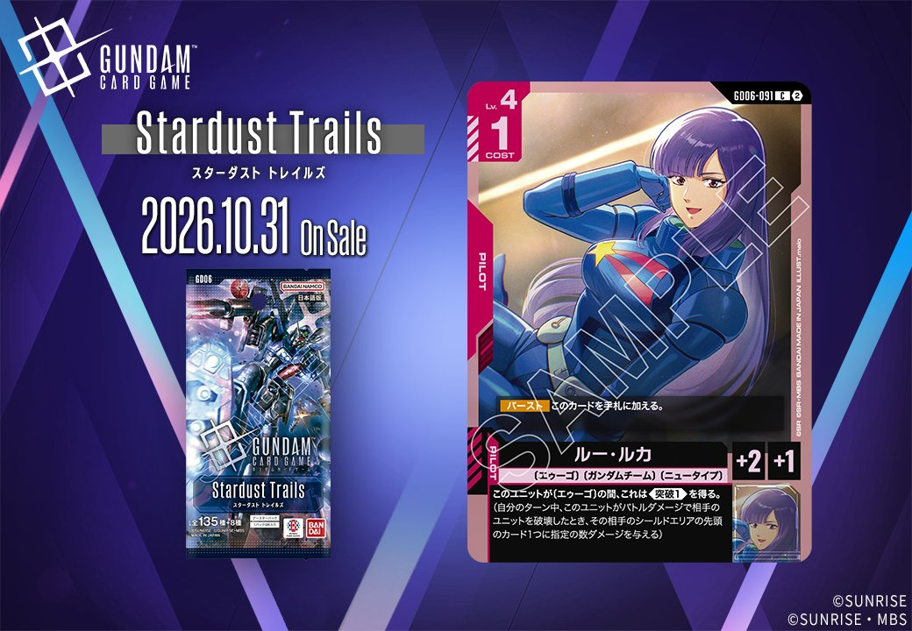

拡張パック「Stardust Trails(GD06)」より、赤のカード2枚を紹介します。COMMAND「ルーへの対抗心(GD06-112)」とPILOT「ルー・ルカ(GD06-091)」で、いずれも発売日は2026年10月31日です。

ルーへの対抗心 (GD06-112)
| 色 | 赤 | タイプ | COMMAND |
| Lv | 3 | コスト | 1 |
| パイロット | エル・ビアンノ（補正 AP+1 / HP+1） 〔エゥーゴ〕、〔ガンダムチーム〕、〔ニュータイプ〕 | ||
効果: 【アクション】〔エゥーゴ〕の味方のユニットとバトルしている相手のユニット1つを選ぶ。それに2ダメージを与える。
ルーへの対抗心(GD06-112)は、コスト1の赤コマンドで、【アクション】により〔エゥーゴ〕の味方ユニットとバトルしている相手ユニットに2ダメージを与える点が特徴です。バトル中の相手を対象とする条件付きのため、格闘戦(ST03-013)のように任意の相手ユニットへ2ダメージを与える汎用除去と比べると発動条件が限定されますが、コスト1でバトルを有利に運べる点は評価できます。2026-10-31発売で、〔エゥーゴ〕を軸にした赤系デッキでの採用が候補となります。

ルー・ルカ (GD06-091)
| 色 | 赤 | タイプ | PILOT |
| Lv | 4 | コスト | 1 |
| 補正 AP | 2 | 補正 HP | 1 |
| 特徴 | 〔エゥーゴ〕、〔ガンダムチーム〕、〔ニュータイプ〕 | ||
効果: 【バースト】このカードを手札に加える。このユニットが〔エゥーゴ〕の間、これは《突破(1)》を得る。(自分のターン中、このユニットがバトルダメージで相手のユニットを破壊したとき、その相手のシールドエリアの先頭のカード1つに指定の数ダメージを与える)
ルー・ルカ(GD06-091)はLv.4/コスト1でAP2・HP1の赤のパイロットカード。【バースト】でこのカードを手札に加え、搭載ユニットが〔エゥーゴ〕の間《突破(1)》を付与するため、バトル勝利時にシールドへの追加ダメージを狙える。 低HPながらコスト1で搭載でき、〔エゥーゴ〕ユニットに常時《突破(1)》を乗せられる点が持ち味で、《制圧》を持つGQuuuuuuX（GD03-034）等と組めばシールド削りを重ねやすい。2026-10-31発売のStardust Trails収録。
関連カード
-
 格闘戦(ST03-013)赤系デッキ内採用率20.3% (1114デッキ)
格闘戦(ST03-013)赤系デッキ内採用率20.3% (1114デッキ) -
 資源衛星パラオ(GD01-128)赤系デッキ内採用率15.9% (874デッキ)
資源衛星パラオ(GD01-128)赤系デッキ内採用率15.9% (874デッキ) -
 GQuuuuuuX（オメガ・サイコミュ起動時）(GD03-034)赤系デッキ内採用率14.3% (786デッキ)
GQuuuuuuX（オメガ・サイコミュ起動時）(GD03-034)赤系デッキ内採用率14.3% (786デッキ) -
 戦技の向上(GD03-109)赤系デッキ内採用率12.7% (697デッキ)
戦技の向上(GD03-109)赤系デッキ内採用率12.7% (697デッキ) -
 GFreD(GD03-035)赤系デッキ内採用率10.1% (555デッキ)
GFreD(GD03-035)赤系デッキ内採用率10.1% (555デッキ) -
 ニャアン(GD03-092)赤系デッキ内採用率8.2% (449デッキ)
ニャアン(GD03-092)赤系デッキ内採用率8.2% (449デッキ) -
 ハマーン・カーン(GD02-091)赤系デッキ内採用率0.7% (36デッキ)
ハマーン・カーン(GD02-091)赤系デッキ内採用率0.7% (36デッキ) -
 アマテ・ユズリハ（マチュ）(ST06-009)赤系デッキ内採用率0.5% (28デッキ)
アマテ・ユズリハ（マチュ）(ST06-009)赤系デッキ内採用率0.5% (28デッキ) -
 ハサウェイ・ノア(ST08-010)赤系デッキ内採用率0.3% (14デッキ)
ハサウェイ・ノア(ST08-010)赤系デッキ内採用率0.3% (14デッキ) -
 消えぬ執念(GD02-109)赤系デッキ内採用率0.1% (4デッキ)
消えぬ執念(GD02-109)赤系デッキ内採用率0.1% (4デッキ)